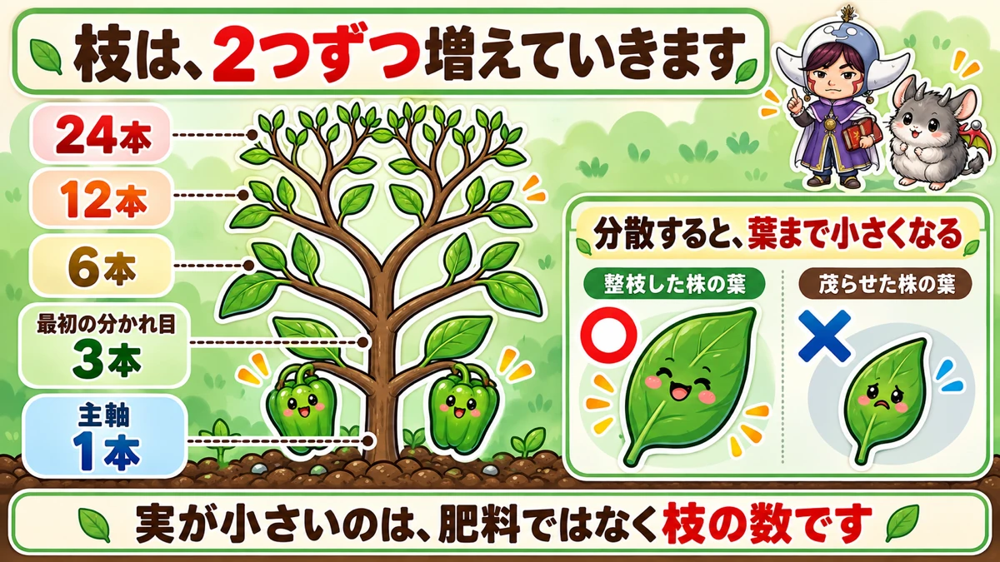
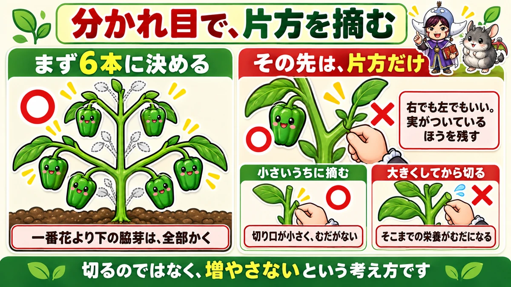
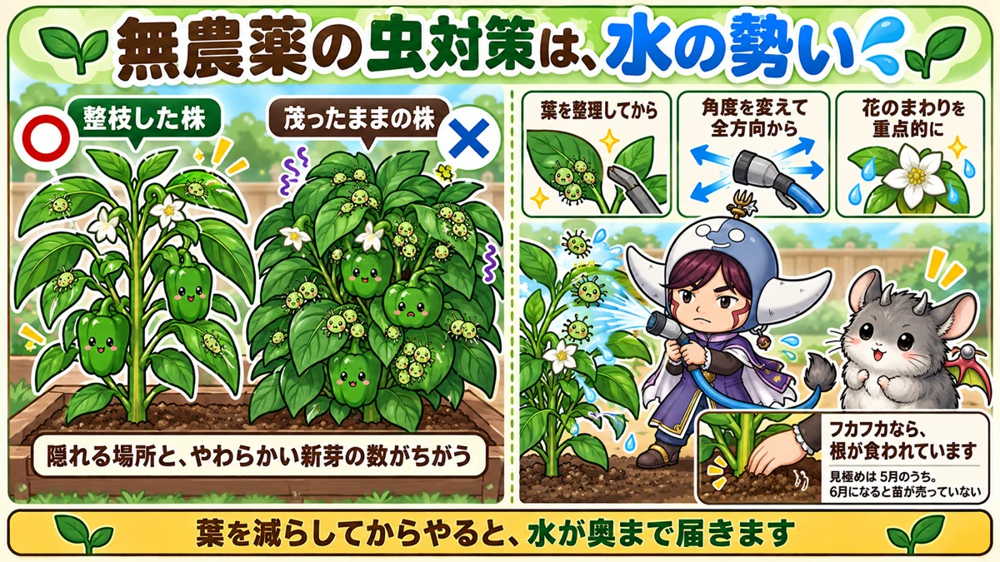

ピーマンが小さいのは、枝の増やしすぎです🫑 片方を摘むだけ
🫑「実は次々つくのに、全部小さい」
🫑「ピーマンは虫がつかないと思っていた」
🫑「1株だけ、まったく大きくならない」
どうも、8150（えいこう）です🌱 家庭菜園歴8年、理科の教員免許を持っていて、有機・無農薬で野菜を育てています。
トマト、なす、きゅうりと来て、夏野菜でもうひとつ外せないのがピーマンです。
先に、この記事でいちばん言いたいことを言っておきますね。
ピーマンの実が小さいのは、肥料でも日当たりでもなく、枝の増やしすぎです。
しかも枝を減らすと、虫まで一緒に減ります。ここがピーマンの面白いところなんですよね☺️
まず、ピーマンの基本データ
3つだけ押さえてください
- 科：ナス科（トマト・なす・じゃがいもの仲間。同じ場所は3〜4年あける）
- タネまき：2月中旬〜3月中旬（加温が要るので、初めての方は苗からで大丈夫です）
- 植え付け：5月上旬〜中旬（なすと同じで、寒さに弱い）
※時期は中間地（関東〜関西の平野部）が目安。寒い地域は少し遅らせ、暖かい地域は早めに。
📖 この記事の目次
株間は45〜50cm
意外と広く取ります。あとで枝を横に張らせるからです。
30cmで詰めて植えると、隣の株と葉が重なって、下のほうから蒸れてきます。
一番花の下は、全部かく
植えてしばらくすると、最初の花が咲きます。その花より下から出ている脇芽は、全部かいてください。
ここを残すと、株の力が下に流れて、上が育ちません。これはなす・トマトと同じ考え方です。
ピーマンの枝は、2つずつ無限に増えます

3本 → 6本 → 12本 → 24本
ここがピーマンのいちばん独特なところです。
株が育つと、主軸がまず2本か3本に分かれます。株によって違うので、2本なら2本のままで大丈夫です。
問題はその先。分かれた枝が、また2本に分かれます。そしてその先も、また2本。
3本だった株は、6本になって、12本になって、24本になります。放っておくと、ねずみ算です。
分散すると、葉まで小さくなる
枝が増えると何が起きるか。栄養が分散します。
すると、実が小さくなります。ここまでは想像がつくと思います。
でも、それだけじゃないんですよね。葉っぱまで小さくなります。
本来のピーマンの葉は、手のひらくらいあります。もじゃもじゃに茂った株の下のほうを見ると、その半分もありません。
葉は、栄養を作る工場です。工場が小さくなったら、実はもっと小さくなります。
有機で育てるなら、なおさら
もうひとつ、無農薬・有機で育てている方に伝えたいことがあります。
有機の肥料は、効き方がゆるやかです。化成肥料のように、一気にドンとは効きません。
つまり分散させる余裕が、そもそも少ない。だからこそ整枝が効きます。
やることは「分かれ目で片方を摘む」だけ

まず6本に決める
やり方は単純です。
- 主軸が3本に分かれていたら、そこから2本ずつ残す。これで6本
- 主軸が2本なら、2本ずつ残して4本。それでかまいません
その先は、片方だけ残す
6本まで来たら、あとはこうします。
- 枝が2つに分かれるたびに、片方を根元から摘む
- 右でも左でも、どちらでもいい
- 実がついているほうを残すと、迷いません
これを繰り返すと、6本の枝がそれぞれ1本の線として先に伸びていきます。
もじゃもじゃにならず、1本1本の先に大きい実がつきます。
早いほど効きます
ここが大事なところです。
摘むのは、枝が小さいうちに。
大きくなってから切ると、そこまでに使った栄養が全部むだになりますし、切り口も大きくなります。
そして遅れてやると、葉がもう小さくなったあとです。整枝はしたのに葉が小さいまま、という状態になります。
7月に入ってから慌てて整枝する。よくあるパターンです。すっきりはするのですが、その年の実は最後まで小ぶりになりがちです😅
最初は勇気が要ります
正直に言うと、初めてやるとかなりスカスカに見えます。
「切りすぎたかも」と不安になります。私もなりました。
不安な方は、まず1株だけやってみてください。残りは今までどおりにしておく。
2週間後に見比べると、答えが出ます。これがいちばん納得できる方法だと思います。
整枝が、そのまま虫対策になります

ピーマンにも、普通に虫はつきます
「ピーマンは虫がつかない」と、私も思っていました。違いました。
アブラムシ、カメムシ、タバコガ。普通に来ます。
整枝した株には、少なかった
これは自分の畑ではっきり出ました。
同じ日に植えた株なのに、先に整枝した手前の株はアブラムシが少なく、後回しにして茂ったままの奥の株には、びっしりついていました。
理由はたぶん単純で、隠れる場所と、やわらかい新芽の数が違うからです。
葉が多いほど、風も光も届きません。虫にとっては居心地のいい場所になります。
無農薬なら、水圧で飛ばす
ついてしまったあとの手です。ホースの水を強めにして、吹き飛ばします。
コツが3つあります。
- 葉を整理してからやる（水が奥まで届く）
- 角度を変えて、全方向から当てる（片側からだと裏に残ります）
- 花のまわりを重点的に（いちばん集まっています）
「花が落ちるのでは」と心配になりますが、意外と落ちません。台風の日の雨のほうがよっぽど強いですからね。
もし落ちても、また咲きます。虫を減らすほうを優先してください。
終わったら防虫ネットを戻しておきます。
「大きくならない」の犯人が、根のこともあります
他の野菜は元気なのに、ピーマンだけ
最後に、これは覚えておくと得をする話です。
他の野菜は順調なのに、ピーマンだけまったく大きくならないことがあります。
葉の緑が薄い。脇芽すら出てこない。肥料を足しても変わらない。
株元を持って、動かしてみる
そういう株は、株元をつかんで軽く動かしてみてください。
フカフカしていたら、根が食われています。
犯人はネキリムシ（土の中にいるガの幼虫）です。太い根を切られて、細い根だけで辛うじて生きている状態です。
抜いてみると、あるはずの太い根がありません。私も一度これで1株だめにしました。
見極めは5月のうちに
対処は入れ替えです。フカフカなら、抜いて新しい苗を植え直します。
ここで大事なのは期限です。
5月半ばなら、まだ園芸店に苗が並んでいます。ところが6月に入ると、苗はほとんど売り切れています。
「もう少し様子を見よう」で6月まで引っぱると、その年のピーマンは無しになります。
だから早く見極める。これがいちばんの対策です。
学ぶ：栄養は、取り合いになっています🔬
葉が作って、実が受け取る
なぜ枝を減らすと実が大きくなるのか。理科で見るとすっきりします。
葉は、光合成で糖を作る工場です。そして実は、その糖を受け取る側です。
工場の数（葉）に対して、受け取る先（実と枝先）が多すぎると、1つあたりの取り分が減ります。
分けるほど、みんな小さくなる
同じ量のごはんを、3人で分けるか、24人で分けるか。そういう話です。
しかも枝を増やすと、工場である葉そのものまで小さくなる。生産量が落ちたうえに、分ける人数が増えるわけです。
整枝は「実を減らす作業」に見えて、実は「1個あたりの取り分を増やす作業」なんですよね。
実物で確かめられます
これ、畑で確かめられるのがいいところです。
1株だけ整枝して、隣は放っておく。2週間後に、葉の大きさを手のひらと比べてみてください。
理屈で覚えるより、この1回のほうがずっと残ります。私が理科を好きになったのも、実物を見せてもらったからでした☺️
まとめ
ここまで読んでくださって、ありがとうございます！
- ピーマンはナス科。株間45〜50cm、植え付けは5月上旬〜中旬
- 一番花より下の脇芽は全部かく
- 枝は2つずつ無限に分かれる。放置で3→6→12→24本
- 分散すると、実だけでなく葉まで小さくなる
- まず6本に決めて、その先は分かれ目で片方を摘む
- 摘むのは小さいうち。遅れると葉がもう小さい
- 不安なら1株だけ試して、2週間後に見比べる
- ピーマンにも虫はつく。アブラムシ・カメムシ・タバコガ
- 整枝した株のほうが、虫は明らかに少ない
- ついたらホースの水圧で。角度を変えて、花のまわりを重点的に
- 大きくならない株は株元を持つ。フカフカなら根が食われている
- 入れ替えの見極めは5月のうち。6月になると苗が無い
- 整枝は、1個あたりの取り分を増やす作業
全部やろうとしなくて大丈夫です。まずはいちばん茂っている1株の、分かれ目を1か所だけ摘んでみてください。それだけで手ごたえが分かります🫑
次回は、とうもろこしの話です。1本の株から1本しか穫れない野菜を、どう育てるかをお話しします🌽
剪定バサミ
枝を摘む作業がこの記事の中心です。手でちぎると裂けるので、切れ味のいいものを1本。


支柱150cm
実がつくと枝が垂れます。6本仕立てにするなら、早めに立てておくと折れません。
![[商品価格に関しましては、リンクが作成された時点と現時点で情報が変更されている場合がございます。]](https://hbb.afl.rakuten.co.jp/hgb/56d221a0.da732c49.56d221a1.b57a6709/?me_id=1230952&item_id=10017113&pc=https%3A%2F%2Fthumbnail.image.rakuten.co.jp%2F%400_mall%2Fnou-nou%2Fcabinet%2F5010356000109-01.jpg%3F_ex%3D240x240&s=240x240&t=picttext "[商品価格に関しましては、リンクが作成された時点と現時点で情報が変更されている場合がございます。]")
液体肥料
ピーマンは長く穫り続ける野菜なので、追肥が効きます。効きが早いぶん、薄めに回数を分けて。
![[商品価格に関しましては、リンクが作成された時点と現時点で情報が変更されている場合がございます。]](https://hbb.afl.rakuten.co.jp/hgb/56bc2da1.2bf36c6e.56bc2da2.7b66fad7/?me_id=1347284&item_id=10000008&pc=https%3A%2F%2Fthumbnail.image.rakuten.co.jp%2F%400_mall%2Fmandahakko%2Fcabinet%2Fsyokubutsumanda%2F260306_smn_amn5004.jpg%3F_ex%3D240x240&s=240x240&t=picttext "[商品価格に関しましては、リンクが作成された時点と現時点で情報が変更されている場合がございます。]")
麻ひも
枝を支柱に留めるのに使います。8の字にゆるく結ぶのがコツです。
![[商品価格に関しましては、リンクが作成された時点と現時点で情報が変更されている場合がございます。]](https://hbb.afl.rakuten.co.jp/hgb/56bc2b48.a5f55627.56bc2b49.c4ff0d7c/?me_id=1372205&item_id=10005292&pc=https%3A%2F%2Fthumbnail.image.rakuten.co.jp%2F%400_mall%2Faudiofuntech%2Fcabinet%2Fproducts%2Fetc%2Fetc06%2F7052-1.jpg%3F_ex%3D240x240&s=240x240&t=picttext "[商品価格に関しましては、リンクが作成された時点と現時点で情報が変更されている場合がございます。]")
あわせて読みたい